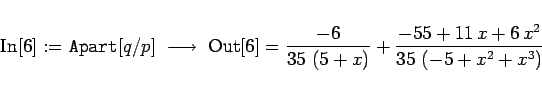

Inhalt Index DeskTop Bronstein

 Computeralgebrasysteme Anwendungen von Computeralgebrasystemen Manipulation algebraischer Ausdrücke Mathematica
Computeralgebrasysteme Anwendungen von Computeralgebrasystemen Manipulation algebraischer Ausdrücke Mathematica


Mathematica zerlegt Quotienten zweier Polynome in Partialbrüche. Auch das ist nur über dem Körper der rationalen Zahlen möglich.
| Beispiel |
|
Unter Nutzung der beiden Polynome p und q des voranstehenden Beispiels erhält man 
|